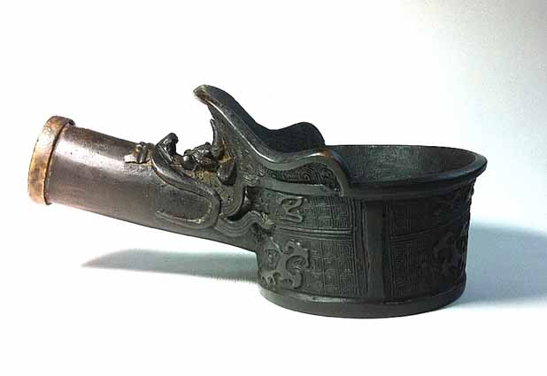
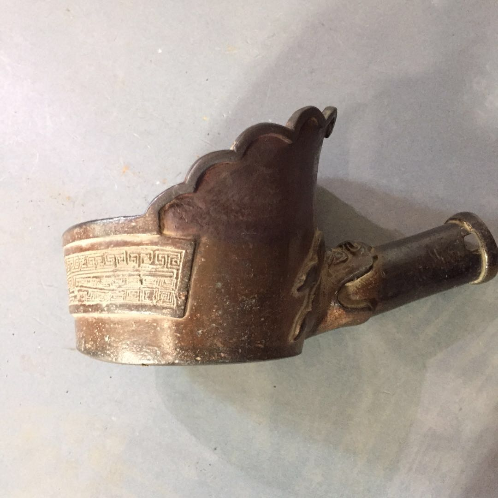
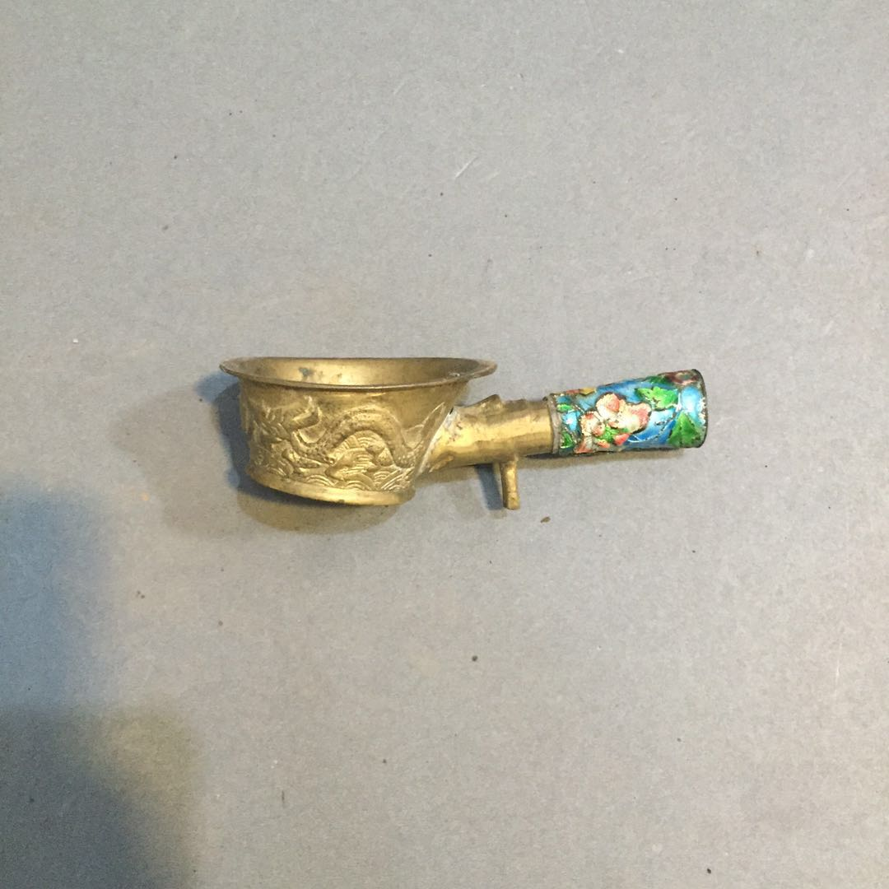
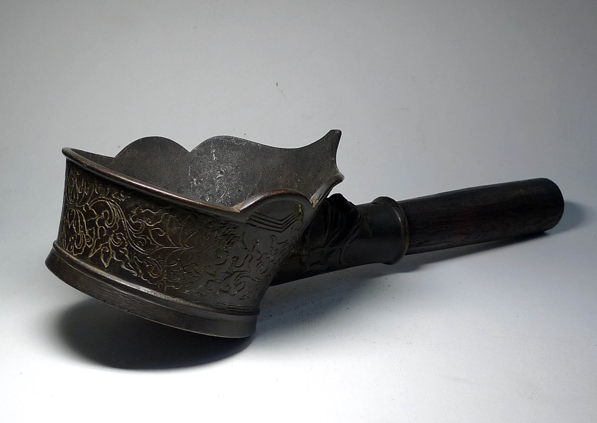

Tang Dynasty Yundou - A robust example of early metalwork utilized during the Tang dynasty, characterized by its intricate design and functionality in garment care.

Song Dynasty Yundou - Reflects the Song period's advancements in metallurgy and decoration, noted for its fine artistic patterns which symbolize prosperity.

Qing Dynasty Yundou - Showcasing the lavishness typical of the Qing era, this iron is adorned with precious metals and intricate carvings, denoting luxury.

Late Qing Dynasty Yundou - Demonstrates the blend of traditional Chinese techniques with Western influences, marking the evolution of cultural exchange in iron crafting.
Our collection of ancient Chinese irons (Yundou) spans several dynasties, each artifact offering a glimpse into the technological and artistic advancements of its time. These irons not only served practical purposes in daily life but also acted as a medium for artistic expression and social status demonstration.
Explore the gallery to learn more about each piece's unique story, craftsmanship, and the historical context underpinning its creation and use. This exhibit aims to connect visitors with the rich cultural heritage of ancient China, emphasizing the importance of these everyday objects in historical narratives.